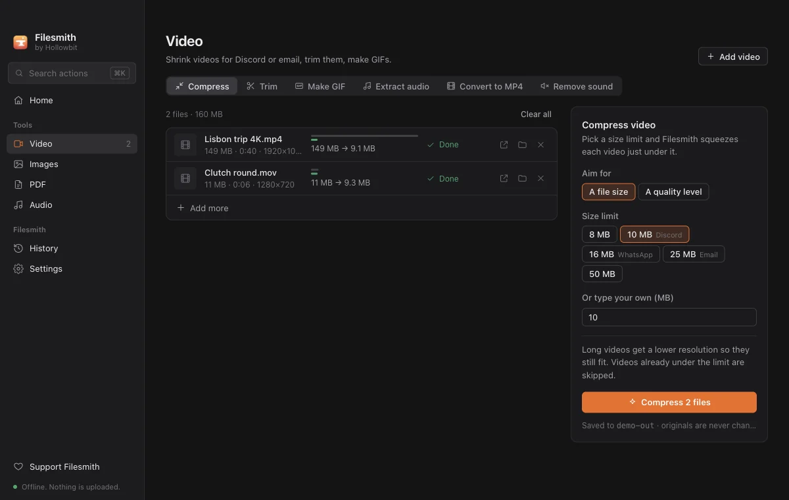
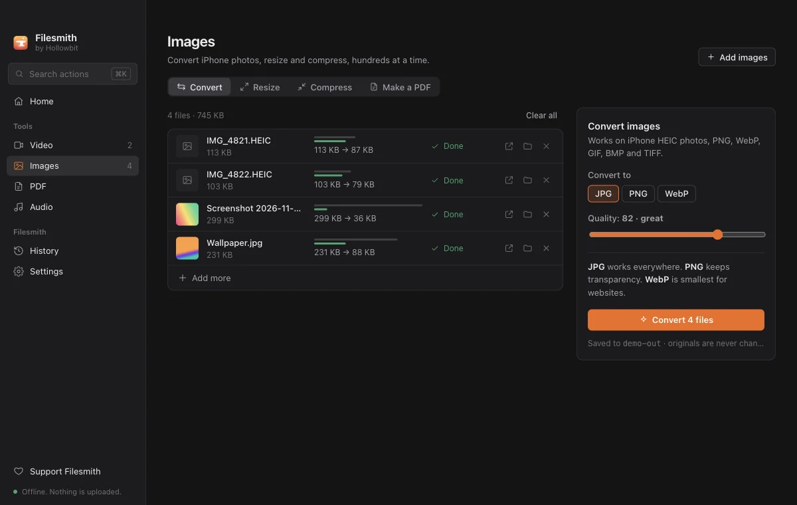
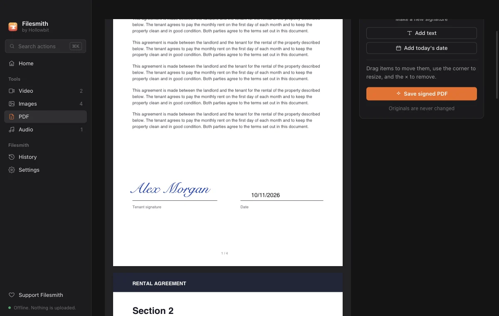
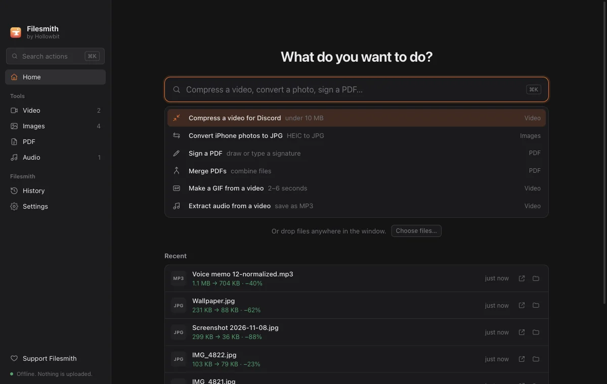

Suelta lo que sea
Arrastra archivos a cualquier parte de la ventana. Filesmith separa vídeos, fotos, PDF y audio por ti.
Dieciocho herramientas para vídeo, imágenes, PDF y audio. Cada una es una elección sencilla como «menos de 10 MB» o «a JPG», nunca una página de ajustes.
Elige un límite de tamaño y Filesmith se queda justo por debajo, siempre.

Fotos de iPhone que no se abren en Windows, arregladas por lotes.

Lo que normalmente pagarías, o subirías tus documentos para hacer.

Notas de voz, podcasts, canciones y tonos.

Arrastra archivos a cualquier parte de la ventana. Filesmith separa vídeos, fotos, PDF y audio por ti.
Pulsa Ctrl K (⌘K en Mac) y escribe lo que quieres, como «heic a jpg».
Cientos de archivos de una vez, con el progreso de cada uno.
Cada resultado es un archivo nuevo. Tus originales nunca cambian.
Cada resultado muestra su tamaño antes y después.
Oscuro por defecto, con modo claro o el del sistema en Ajustes.